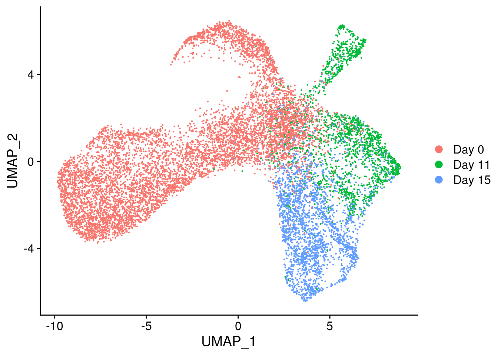
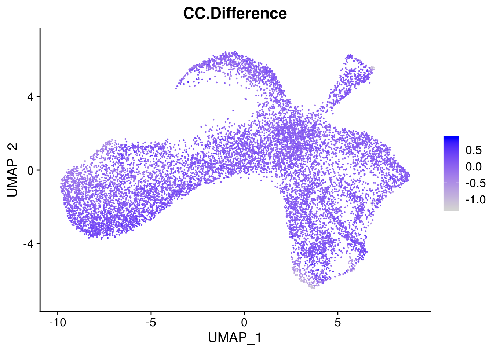
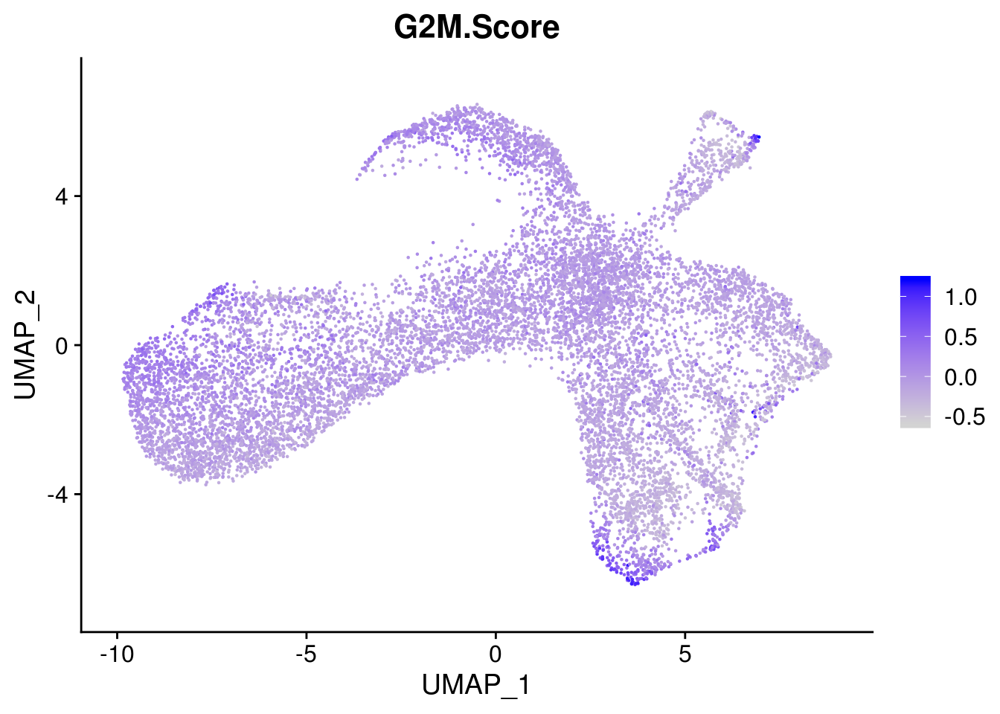
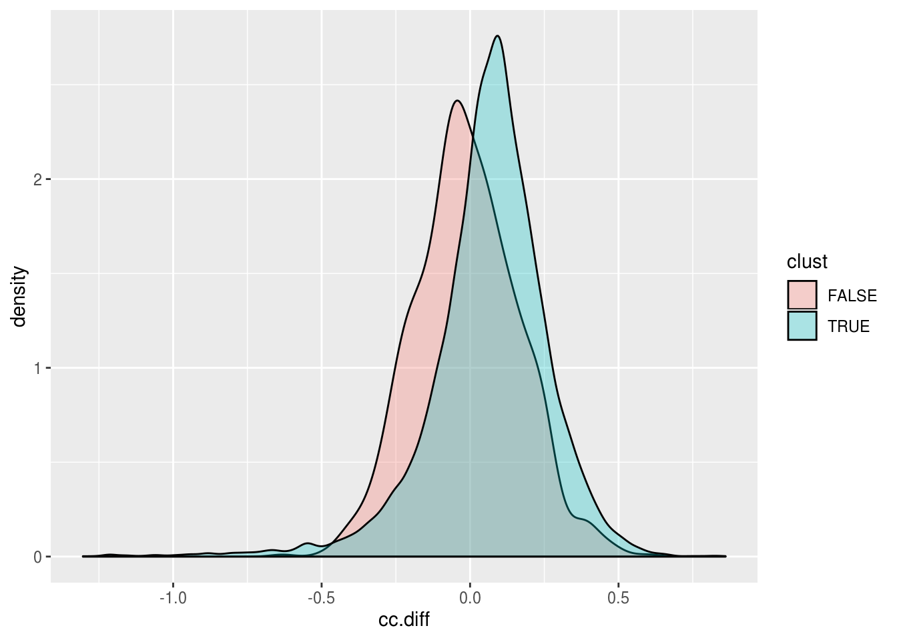
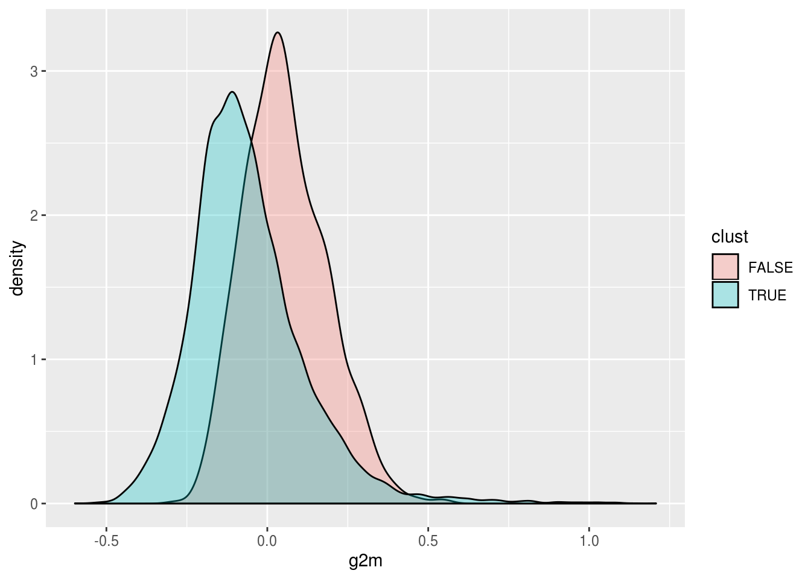
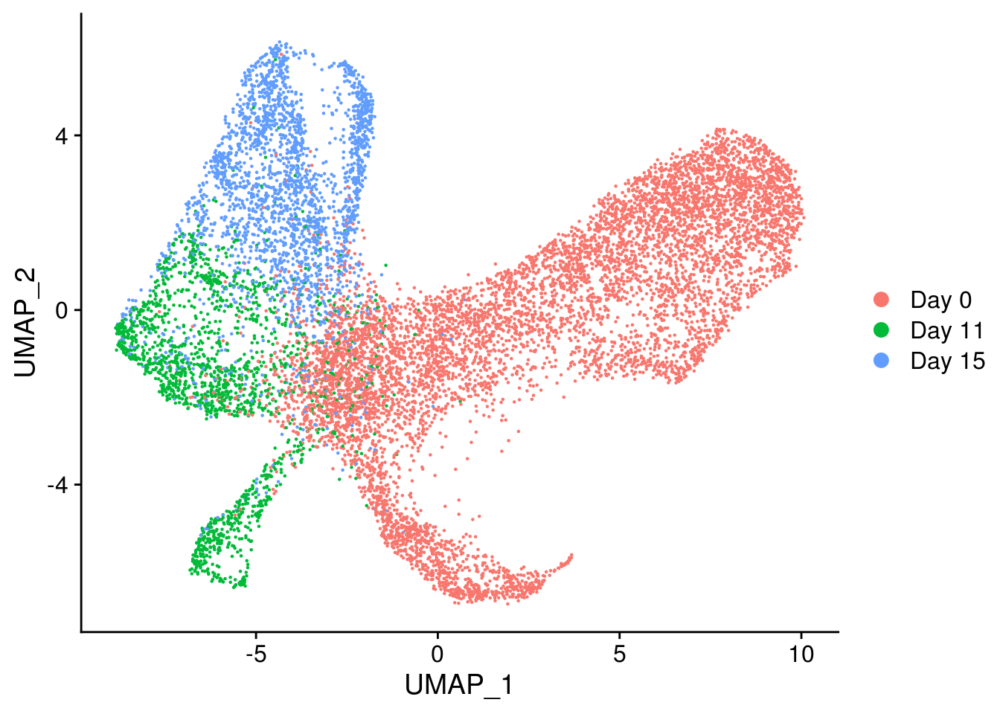
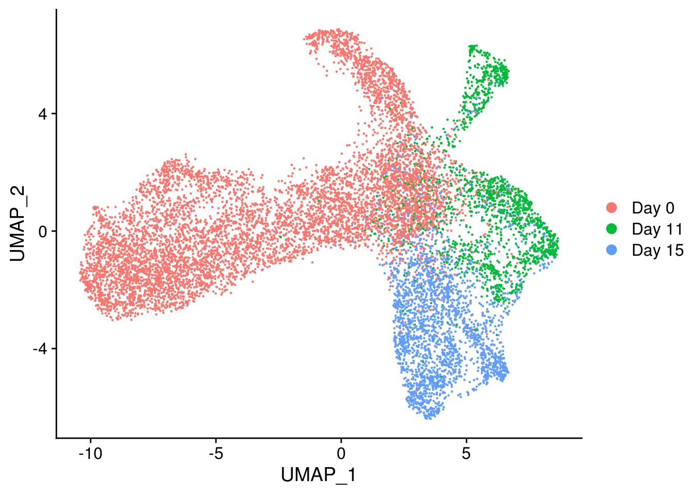

Assessment of Quality Filters
Last updated: 2020-04-02
Checks: 7 0
Knit directory: SC_Cardiomyocyte/
This reproducible R Markdown analysis was created with workflowr (version 1.5.0). The Checks tab describes the reproducibility checks that were applied when the results were created. The Past versions tab lists the development history.
Great! Since the R Markdown file has been committed to the Git repository, you know the exact version of the code that produced these results.
Great job! The global environment was empty. Objects defined in the global environment can affect the analysis in your R Markdown file in unknown ways. For reproduciblity it’s best to always run the code in an empty environment.
The command set.seed(20191212) was run prior to running the code in the R Markdown file. Setting a seed ensures that any results that rely on randomness, e.g. subsampling or permutations, are reproducible.
Great job! Recording the operating system, R version, and package versions is critical for reproducibility.
Nice! There were no cached chunks for this analysis, so you can be confident that you successfully produced the results during this run.
Great job! Using relative paths to the files within your workflowr project makes it easier to run your code on other machines.
Great! You are using Git for version control. Tracking code development and connecting the code version to the results is critical for reproducibility. The version displayed above was the version of the Git repository at the time these results were generated.
Note that you need to be careful to ensure that all relevant files for the analysis have been committed to Git prior to generating the results (you can use wflow_publish or wflow_git_commit). workflowr only checks the R Markdown file, but you know if there are other scripts or data files that it depends on. Below is the status of the Git repository when the results were generated:
Ignored files:
Ignored: .Rhistory
Ignored: analysis/.Rhistory
Ignored: analysis/CM_focus.nb.html
Ignored: analysis/dim_reduce.nb.html
Ignored: analysis/dim_reduce_2.nb.html
Ignored: analysis/doublet_analysis_CD1.nb.html
Ignored: analysis/doublet_analysis_CD2.nb.html
Ignored: analysis/doublet_analysis_CD3.nb.html
Ignored: analysis/doublet_analysis_E1CD1.nb.html
Ignored: analysis/doublet_analysis_E1CD2.nb.html
Ignored: analysis/doublet_analysis_E1CD3.nb.html
Ignored: analysis/doublet_analysis_E2CD1.nb.html
Ignored: analysis/doublet_analysis_E2CD3.nb.html
Ignored: analysis/doublet_analysis_E3CD1.nb.html
Ignored: analysis/doublet_analysis_E3CD2.nb.html
Ignored: analysis/doublet_analysis_E3CD3.nb.html
Ignored: analysis/qual_labels.nb.html
Ignored: analysis/qual_labels_cd1.nb.html
Ignored: analysis/qual_labels_cd2.nb.html
Ignored: analysis/qual_labels_cd3.nb.html
Ignored: code/.Rhistory
Ignored: data/E1_CollectionInfo.tsv
Ignored: data/E2_CollectionInfo.tsv
Ignored: data/E3_CollectionInfo.tsv
Ignored: data/README.html
Ignored: data/bg_genes.txt
Ignored: data/cluster2_markers.RData
Ignored: data/col4_bg_genes.txt
Ignored: data/col4_hiqual_markers.txt
Ignored: data/col4_loqual_markers.txt
Ignored: data/col6_bg_genes.txt
Ignored: data/col6_hiqual_markers.txt
Ignored: data/col6_loqual_markers.txt
Ignored: data/de_genes.txt
Ignored: data/de_genes_down.txt
Ignored: data/de_genes_up.txt
Ignored: data/demux_exp1.RDS
Ignored: data/demux_exp2.RDS
Ignored: data/demux_exp3.RDS
Ignored: data/demuxlet_data.RData
Ignored: data/geneinfo.rds
Ignored: data/hiqual_markers.txt
Ignored: data/loqual_markers.txt
Ignored: data/monocle_from_seurat_fulldata_sctransform_mitoregress_graphed.RDS
Ignored: data/seurat_CM.RDS
Ignored: data/seurat_combined.RDS
Ignored: data/seurat_filter2.RDS
Ignored: data/seurat_filter2_pca.RDS
Ignored: data/seurat_filter2_sctransformed.RDS
Ignored: data/seurat_filter2_umap.RDS
Ignored: data/seurat_filtered.RDS
Ignored: data/seurat_normalized.RDS
Ignored: data/seurat_pca.RDS
Ignored: data/seurat_round1_allsinglets.RDS
Ignored: data/seurat_round1_unfiltered.RDS
Ignored: data/seurat_round2_allsinglets.RDS
Ignored: data/seurat_round2_unfiltered.RDS
Ignored: data/seurat_round3_allsinglets.RDS
Ignored: data/seurat_round3_unfiltered.RDS
Ignored: data/seurat_umap.RDS
Ignored: output/gsea/
Ignored: wrappers/
Untracked files:
Untracked: analysis/CM_focus.Rmd
Untracked: analysis/cell_cycle_fx.Rmd
Untracked: analysis/trouble.R
Untracked: analysis/update_workflow.R
Untracked: code/counts2umap.R
Untracked: code/create_seurat_object.R
Untracked: code/create_seurat_round1.R
Untracked: code/create_seurat_round1_doublets.R
Untracked: code/create_seurat_round2.R
Untracked: code/create_seurat_round2_doublets.R
Untracked: code/create_seurat_round3.R
Untracked: code/create_seurat_round3_doublets.R
Untracked: code/directory_navigation.R
Untracked: code/directory_navigation_doublets.R
Untracked: code/filter_seurat.R
Untracked: code/filterfinder.R
Untracked: code/getCM_seurat.R
Untracked: code/gsea.R
Untracked: code/gsea/
Untracked: code/logistic_classifier.R
Untracked: code/merge_seurat.R
Untracked: code/normalize_seurat.R
Untracked: code/pca_seurat.R
Untracked: code/qual_filter.R
Untracked: code/qual_filter2.R
Untracked: code/umap_seurat.R
Untracked: collections/
Untracked: intermediate_images/
Untracked: junk/
Unstaged changes:
Modified: .gitignore
Deleted: analysis/demuxlet_analysis.Rmd
Modified: analysis/dim_reduce_2.Rmd
Modified: analysis/doublet_analysis_CD1.Rmd
Deleted: analysis/doublet_analysis_E1CD1.Rmd
Deleted: analysis/pseudotime.Rmd
Deleted: analysis/quality_control_123.Rmd
Deleted: analysis/seurat_diffex.Rmd
Modified: code/demuxlet_dataload.R
Modified: data/README.md
Note that any generated files, e.g. HTML, png, CSS, etc., are not included in this status report because it is ok for generated content to have uncommitted changes.
These are the previous versions of the R Markdown and HTML files. If you’ve configured a remote Git repository (see ?wflow_git_remote), click on the hyperlinks in the table below to view them.
| File | Version | Author | Date | Message |
|---|---|---|---|---|
| Rmd | 1d5952c | jmp448 | 2020-04-02 | wflow_publish(“analysis/quality_filter_analysis.Rmd”) |
| html | 0e32174 | jmp448 | 2020-03-31 | Build site. |
| Rmd | 2cbb44a | jmp448 | 2020-03-31 | wflow_publish(“analysis/quality_filter_analysis.Rmd”) |
sc_no_filt <- readRDS("./collections/e1comb.processed.rds")
DimPlot(sc_no_filt, group.by="diffday")
| Version | Author | Date |
|---|---|---|
| 0e32174 | jmp448 | 2020-03-31 |
DimPlot(sc_no_filt, group.by="quality")
| Version | Author | Date |
|---|---|---|
| 0e32174 | jmp448 | 2020-03-31 |
sc_filt <- readRDS("./collections/e1comb_filt.processed.rds")
DimPlot(sc_filt, group.by="diffday")
| Version | Author | Date |
|---|---|---|
| 0e32174 | jmp448 | 2020-03-31 |
FeaturePlot(sc_filt,features="TNNT2")
| Version | Author | Date |
|---|---|---|
| 0e32174 | jmp448 | 2020-03-31 |
FeaturePlot(sc_filt, features="IGF2")
| Version | Author | Date |
|---|---|---|
| 0e32174 | jmp448 | 2020-03-31 |
FeaturePlot(sc_filt, features=c("demux.dbl.prb", "percent.mito"))
| Version | Author | Date |
|---|---|---|
| 0e32174 | jmp448 | 2020-03-31 |
Gene Set Enrichment Analysis
What gene sets are the low-quality cells enriched for?
qual.enrichment <- read.table("./output/gsea/quality/low/hallmark.txt", skip=3, sep="\t", header=T)
qual.enrichment[qual.enrichment$bonferroni.adjusted<=0.05,] X test_inset test_notinset background_inset
5 HALLMARK_MITOTIC_SPINDLE 3 17 193
34 HALLMARK_E2F_TARGETS 3 17 197
44 HALLMARK_G2M_CHECKPOINT 3 17 194
background_notinset oddsratio pvalue bonferroni.adjusted
5 29307 26.79701 0.0003023331 0.01511665
34 29303 26.24933 0.0003207682 0.01603841
44 29306 26.65797 0.0003068758 0.01534379
testgenes_in_set
5 CENPF,CENPE,DST
34 MKI67,CENPE,NOP56
44 MKI67,CENPE,CENPFAre there any interesting enrichments in the high-quality cells?
qual.enrichment <- read.table("./output/gsea/quality/high/hallmark.txt", skip=3, sep="\t", header=T)
qual.enrichment <- qual.enrichment[order(qual.enrichment$bonferroni.adjusted),]
qual.enrichment[qual.enrichment$bonferroni.adjusted<=0.05,] X test_inset test_notinset
31 HALLMARK_EPITHELIAL_MESENCHYMAL_TRANSITION 15 89
17 HALLMARK_MYOGENESIS 12 92
38 HALLMARK_APOPTOSIS 5 99
7 HALLMARK_ESTROGEN_RESPONSE_LATE 5 99
49 HALLMARK_COAGULATION 4 100
background_inset background_notinset oddsratio pvalue
31 183 29233 26.923006 4.137564e-16
17 179 29237 21.304591 3.909888e-12
38 150 29266 9.853872 2.264269e-04
7 183 29233 8.067837 5.486833e-04
49 120 29296 9.765333 9.862216e-04
bonferroni.adjusted
31 2.068782e-14
17 1.954944e-10
38 1.132134e-02
7 2.743417e-02
49 4.931108e-02
testgenes_in_set
31 DCN,FN1,MYL9,ID2,TPM2,TPM1,VIM,SPARC,COL1A2,MEST,COL1A1,COL3A1,CDH2,LUM,TAGLN
17 TNNT1,TNNT2,SVIL,ACTC1,COL1A1,TPM2,SPARC,MYL7,MYL4,TNNI1,COL3A1,TAGLN
38 DCN,IFITM3,KRT18,LUM,HSPB1
7 MDK,ID2,CPE,KRT19,MEST
49 CTSB,SPARC,FN1,CTSVCell Cycle Effects
Does it seem like cell cycle scores are having a large effect on this? Using Seurat tools
s.genes <- cc.genes$s.genes
g2m.genes <- cc.genes$g2m.genes
sc_no_filt <- CellCycleScoring(sc_no_filt, s.features=s.genes, g2m.features=g2m.genes, set.ident=F)Warning: The following features are not present in the object: MLF1IP, not
searching for symbol synonymsWarning: The following features are not present in the object: FAM64A, HN1,
not searching for symbol synonymssc_no_filt$CC.Difference <- sc_no_filt$S.Score - sc_no_filt$G2M.ScoreDoes the CC difference (differentiates between cycling and non-cycling cells, but not between stages in the cycle) seem to correspond with the low quality cells? How about G2M?
DimPlot(sc_no_filt, group.by="quality")
| Version | Author | Date |
|---|---|---|
| 0e32174 | jmp448 | 2020-03-31 |
FeaturePlot(sc_no_filt, features="CC.Difference")
| Version | Author | Date |
|---|---|---|
| 0e32174 | jmp448 | 2020-03-31 |
FeaturePlot(sc_no_filt, features="G2M.Score")
| Version | Author | Date |
|---|---|---|
| 0e32174 | jmp448 | 2020-03-31 |
Looking at this more quantitatively
cell.cycle.fx <- data.frame(sc_no_filt$CC.Difference)
colnames(cell.cycle.fx) <- "cc.diff"
cell.cycle.fx$g2m <- sc_no_filt$G2M.Score
cell.cycle.fx$quality <- sc_no_filt$quality
g2m.good <- cell.cycle.fx[cell.cycle.fx$quality==T, "g2m"]
g2m.bad <- cell.cycle.fx[cell.cycle.fx$quality==F, "g2m"]
ccdiff.good <- cell.cycle.fx[cell.cycle.fx$quality==T, "cc.diff"]
ccdiff.bad <- cell.cycle.fx[cell.cycle.fx$quality==F, "cc.diff"]
t.ccdiff <- t.test(ccdiff.good, ccdiff.bad)
t.ccdiff
Welch Two Sample t-test
data: ccdiff.good and ccdiff.bad
t = 24.585, df = 81994, p-value < 2.2e-16
alternative hypothesis: true difference in means is not equal to 0
95 percent confidence interval:
0.02649968 0.03109108
sample estimates:
mean of x mean of y
0.05372830 0.02493292 t.ccdiff$p.value[1] 5.618502e-133t.g2m <- t.test(g2m.good, g2m.bad, alternative = "less")
t.g2m
Welch Two Sample t-test
data: g2m.good and g2m.bad
t = -51.851, df = 91609, p-value < 2.2e-16
alternative hypothesis: true difference in means is less than 0
95 percent confidence interval:
-Inf -0.05102984
sample estimates:
mean of x mean of y
-0.07952577 -0.02682408 t.g2m$p.value[1] 0ggplot(cell.cycle.fx, aes(x=cc.diff, fill=quality)) + geom_density(alpha=.3)
| Version | Author | Date |
|---|---|---|
| 0e32174 | jmp448 | 2020-03-31 |
ggplot(cell.cycle.fx, aes(x=g2m, fill=quality)) + geom_density(alpha=.3)
| Version | Author | Date |
|---|---|---|
| 0e32174 | jmp448 | 2020-03-31 |
Sanity check, is this way more pronounced for, say, percent mito and doublet probability?
confounder.fx <- data.frame(sc_no_filt$percent.mito)
colnames(confounder.fx) <- "mito"
confounder.fx$dbl <- sc_no_filt$demux.dbl.prb
confounder.fx$quality <- sc_no_filt$quality
mito.good <- confounder.fx[confounder.fx$quality==T, "mito"]
mito.bad <- confounder.fx[confounder.fx$quality==F, "mito"]
dbl.good <- confounder.fx[confounder.fx$quality==T, "dbl"]
dbl.bad <- confounder.fx[confounder.fx$quality==F, "dbl"]
t.mito <- t.test(mito.good, mito.bad, alternative="less")
t.mito
Welch Two Sample t-test
data: mito.good and mito.bad
t = -137.13, df = 42741, p-value < 2.2e-16
alternative hypothesis: true difference in means is less than 0
95 percent confidence interval:
-Inf -10.52875
sample estimates:
mean of x mean of y
15.42993 26.08651 t.mito$p.value[1] 0t.dbl <- t.test(dbl.good, dbl.bad, alternative = "less")
t.dbl
Welch Two Sample t-test
data: dbl.good and dbl.bad
t = -122.87, df = 40536, p-value < 2.2e-16
alternative hypothesis: true difference in means is less than 0
95 percent confidence interval:
-Inf -0.17769
sample estimates:
mean of x mean of y
0.0536969 0.2337979 t.dbl$p.value[1] 0ggplot(confounder.fx, aes(x=mito, fill=quality)) + geom_density(alpha=.3)
| Version | Author | Date |
|---|---|---|
| 0e32174 | jmp448 | 2020-03-31 |
ggplot(confounder.fx, aes(x=dbl, fill=quality)) + geom_density(alpha=.3)
| Version | Author | Date |
|---|---|---|
| 0e32174 | jmp448 | 2020-03-31 |
Close-Up CD1Col6
col6 <- readRDS("./collections/e1cd1col6")
DimPlot(col6, group.by="diffday")
| Version | Author | Date |
|---|---|---|
| 0e32174 | jmp448 | 2020-03-31 |
s.genes <- cc.genes$s.genes
g2m.genes <- cc.genes$g2m.genes
col6_cc <- CellCycleScoring(col6, s.features=s.genes, g2m.features=g2m.genes, set.ident=F)
col6_cc$CC.Difference <- col6_cc$S.Score - col6_cc$G2M.Score
col6_cc <- FindVariableFeatures(col6_cc)
col6_cc <- ScaleData(col6_cc, vars.to.regress = "CC.Difference")
col6_cc <- RunPCA(col6_cc)
col6_cc <- FindNeighbors(col6_cc, reduction = "pca")
col6_cc <- FindClusters(col6_cc)Modularity Optimizer version 1.3.0 by Ludo Waltman and Nees Jan van Eck
Number of nodes: 7165
Number of edges: 233255
Running Louvain algorithm...
Maximum modularity in 10 random starts: 0.8206
Number of communities: 11
Elapsed time: 1 secondscol6_cc <- RunUMAP(col6_cc, dims=1:10)DimPlot(col6_cc, group.by="diffday")
| Version | Author | Date |
|---|---|---|
| 0e32174 | jmp448 | 2020-03-31 |
If anything, it got bigger. Does gene set enrichment look any different in this close-up?
col6 <- FindClusters(col6)Modularity Optimizer version 1.3.0 by Ludo Waltman and Nees Jan van Eck
Number of nodes: 7165
Number of edges: 227110
Running Louvain algorithm...
Maximum modularity in 10 random starts: 0.8201
Number of communities: 12
Elapsed time: 1 secondsDimPlot(col6)
| Version | Author | Date |
|---|---|---|
| 0e32174 | jmp448 | 2020-03-31 |
markers <- FindMarkers(col6, ident.1=0)
hiq.markers <- rownames(markers)[markers$avg_logFC<0]
loq.markers <- rownames(markers)[markers$avg_logFC>0]
bg <- rownames(col6)[!rownames(col6) %in% rownames(markers)]
write.table(hiq.markers, file="./data/col6_hiqual_markers.txt", row.names=F, col.names=F, quote=F)
write.table(loq.markers, file="./data/col6_loqual_markers.txt", row.names=F, col.names=F, quote=F)
write.table(bg, file="./data/col6_bg_genes.txt", row.names=F, col.names=F, quote=F)Look at enrichment of the low quality cluster
qual.enrichment <- read.table("./output/gsea/col6_quality/low/hallmark.txt", skip=3, sep="\t", header=T)
qual.enrichment <- qual.enrichment[order(qual.enrichment$bonferroni.adjusted),]
qual.enrichment[qual.enrichment$bonferroni.adjusted<=0.05,][1] X test_inset test_notinset
[4] background_inset background_notinset oddsratio
[7] pvalue bonferroni.adjusted testgenes_in_set
<0 rows> (or 0-length row.names)No enrichment. What are the marker genes?
loq.markers[1] "MT-RNR2" "MT-RNR1" "CHML" "HIST1H1D" "MTRNR2L12" "HIST1H1C"
[7] "HIST1H1B" "MTRNR2L1" "HIST1H1E" The HIST group are histone proteins, and MT-denotes a mitochondrial read
Enrichment for the high quality genes?
qual.enrichment <- read.table("./output/gsea/col6_quality/high/hallmark.txt", skip=3, sep="\t", header=T)
qual.enrichment <- qual.enrichment[order(qual.enrichment$bonferroni.adjusted),]
qual.enrichment[qual.enrichment$bonferroni.adjusted<=0.05,] X test_inset test_notinset
30 HALLMARK_OXIDATIVE_PHOSPHORYLATION 13 132
17 HALLMARK_MYOGENESIS 9 136
31 HALLMARK_EPITHELIAL_MESENCHYMAL_TRANSITION 9 136
7 HALLMARK_ESTROGEN_RESPONSE_LATE 8 137
39 HALLMARK_ANDROGEN_RESPONSE 5 140
8 HALLMARK_ADIPOGENESIS 6 139
38 HALLMARK_APOPTOSIS 5 140
16 HALLMARK_INTERFERON_ALPHA_RESPONSE 4 141
background_inset background_notinset oddsratio pvalue
30 185 29111 15.497256 2.059866e-11
17 177 29119 10.886964 3.826348e-07
31 182 29114 10.586054 4.783116e-07
7 180 29116 9.445580 4.499431e-06
39 92 29204 11.336957 1.210926e-04
8 186 29110 6.755628 3.904914e-04
38 147 29149 7.081876 9.577949e-04
16 85 29211 9.749186 9.963188e-04
bonferroni.adjusted
30 1.029933e-09
17 1.913174e-05
31 2.391558e-05
7 2.249715e-04
39 6.054629e-03
8 1.952457e-02
38 4.788974e-02
16 4.981594e-02
testgenes_in_set
30 ATP6V1D,NDUFA4,NDUFA3,NDUFB6,ATP5PF,PRDX3,NDUFB1,MGST3,GPX4,COX8A,ATP5MC3,ATP5MC2,COX6A1
17 TNNT1,TNNT2,CNN3,COL1A1,MYL7,SPARC,TNNI1,COL3A1,EIF4A2
31 ID2,TPM1,VIM,SPARC,COL1A2,COL1A1,COL3A1,MEST,LUM
7 MDK,SLC9A3R1,ID2,CPE,MEST,GAL,CXCL14,KRT19
39 KRT8,B2M,SELENOP,H1F0,KRT19
8 PRDX3,MGST3,GPX4,COX8A,APLP2,COX6A1
38 IFITM3,TGFB2,H1F0,LUM,GPX4
16 IFITM3,IFITM1,B2M,BST2Close-Up CD3Col4
col4 <- readRDS("./collections/e1cd3col4")
DimPlot(col4, group.by="diffday")
Maybe that day 0 arc is what’s driving the observed cell-cycle effects
s.genes <- cc.genes$s.genes
g2m.genes <- cc.genes$g2m.genes
col4 <- CellCycleScoring(col4, s.features=s.genes, g2m.features=g2m.genes, set.ident=F)Warning: The following features are not present in the object: MLF1IP, not
searching for symbol synonymsWarning: The following features are not present in the object: FAM64A, HN1,
not searching for symbol synonymscol4$CC.Difference <- col4$S.Score - col4$G2M.Score
FeaturePlot(col4, features="CC.Difference")
FeaturePlot(col4, features="G2M.Score")
Maybe not. Due diligence
cell.cycle.fx <- data.frame(col4$CC.Difference)
colnames(cell.cycle.fx) <- "cc.diff"
cell.cycle.fx$g2m <- col4$G2M.Score
cell.cycle.fx$clust <- col4$seurat_clusters != 4
g2m.good <- cell.cycle.fx[cell.cycle.fx$clust==T, "g2m"]
g2m.bad <- cell.cycle.fx[cell.cycle.fx$clust==F, "g2m"]
ccdiff.good <- cell.cycle.fx[cell.cycle.fx$clust==T, "cc.diff"]
ccdiff.bad <- cell.cycle.fx[cell.cycle.fx$clust==F, "cc.diff"]
t.ccdiff <- t.test(ccdiff.good, ccdiff.bad)
t.ccdiff
Welch Two Sample t-test
data: ccdiff.good and ccdiff.bad
t = 12.785, df = 1192.4, p-value < 2.2e-16
alternative hypothesis: true difference in means is not equal to 0
95 percent confidence interval:
0.06415708 0.08741727
sample estimates:
mean of x mean of y
0.06396106 -0.01182611 t.ccdiff$p.value[1] 3.609126e-35t.g2m <- t.test(g2m.good, g2m.bad, alternative = "less")
t.g2m
Welch Two Sample t-test
data: g2m.good and g2m.bad
t = -26.094, df = 1308.4, p-value < 2.2e-16
alternative hypothesis: true difference in means is less than 0
95 percent confidence interval:
-Inf -0.109458
sample estimates:
mean of x mean of y
-0.06021870 0.05660881 t.g2m$p.value[1] 1.728545e-121ggplot(cell.cycle.fx, aes(x=cc.diff, fill=clust)) + geom_density(alpha=.3)
ggplot(cell.cycle.fx, aes(x=g2m, fill=clust)) + geom_density(alpha=.3)
GSEA
Idents(col4) <- col4$seurat_clusters
markers <- FindMarkers(col4, ident.1=4)
hiq.markers <- rownames(markers)[markers$avg_logFC<0]
loq.markers <- rownames(markers)[markers$avg_logFC>0]
bg <- rownames(col4)[!rownames(col4) %in% rownames(markers)]
write.table(hiq.markers, file="../data/col4_hiqual_markers.txt", row.names=F, col.names=F, quote=F)
write.table(loq.markers, file="../data/col4_loqual_markers.txt", row.names=F, col.names=F, quote=F)
write.table(bg, file="../data/col4_bg_genes.txt", row.names=F, col.names=F, quote=F)qual.enrichment <- read.table("./output/gsea/cd3col4/low/sc.txt", skip=3, sep="\t", header=T)
qual.enrichment <- qual.enrichment[order(qual.enrichment$bonferroni.adjusted),]
qual.enrichment[qual.enrichment$bonferroni.adjusted<=0.05,] X
162 Menon_Fetal_Kidney_0_Cap_Mesenchyme_Cells
17 Fan_Embryonic_CTX_Microglia_1
87 Hay_Bone_Marrow_Pro_B
166 Fan_Embryonic_CTX_NSC_2
89 Manno_Midbrain_Neurotypes_hProgFPL
254 Zhong_PFC_C1_OPC
19 Manno_Midbrain_Neurotypes_hProgBP
90 Manno_Midbrain_Neurotypes_hProgFPM
137 Zheng_Cord_Blood_C7_Putative_Lymphoid_Primed_Multipotent_Progenitor_1
196 Hu_Fetal_Retina_RPE
73 Menon_Fetal_Kidney_7_Loopof_Henle_Cells_Distal
164 Lake_Adult_Kidney_C3_Proximal_Tubule_Epithelial_Cells_S1_S2
241 Aizarani_Liver_C20_LSECs_3
195 Zhong_PFC_Major_Types_NPCs
29 Zhong_PFC_C2_Unknown_NPC
186 Muraro_Pancreas_Beta_Cell
124 Menon_Fetal_Kidney_4_Podocytes
256 Lake_Adult_Kidney_C18_Collecting_Duct_Principal_Cells_medulla
139 Menon_Fetal_Kidney_8_Connecting_Tubule_Cells
171 Lake_Adult_Kidney_C5_Proximal_Tubule_Epithelial_Cells_Stress_Inflam
216 Menon_Fetal_Kidney_1_Embryonic_Red_Blood_Cells
114 Manno_Midbrain_Neurotypes_hGaba
125 Zhong_PFC_C1_Microglia
203 Aizarani_Liver_C9_LSECs_1
204 Manno_Midbrain_Neurotypes_hNProg
65 Zheng_Cord_Blood_C9_Granulocyte_Macrophage_Progenitor
206 Lake_Adult_Kidney_C8_Decending_thin_Limb
106 Hu_Fetal_Retina_RPC
209 Menon_Fetal_Kidney_3_Stromal_Cells
33 Lake_Adult_Kidney_C10_Thin_ascending_limb
24 Lake_Adult_Kidney_C2_Podocytes
220 Lake_Adult_Kidney_C24_Endothelial_Cells_AEA_and_DVR
83 Aizarani_Liver_C31_Kupffer_Cells_5
115 Lake_Adult_Kidney_C6_Proximal_Tubule_Epithelial_Cells_Fibrinogen_pos_S3
145 Lake_Adult_Kidney_C26_Mesangial_Cells
75 Lake_Adult_Kidney_C20_Collecting_Duct_Intercalated_Cells_Type_A_cortex
22 Zhong_PFC_C8_oRG_Proliferating
102 Gao_Large_Intestine_24W_C2_MKI67pos_Progenitor
218 Manno_Midbrain_Neurotypes_hProgM
144 Gao_Large_Intestine_Adult_CH_MKI67high_Cells
170 Zheng_Cord_Blood_C3_Megakaryocyte_Erythroid_Progenitor
104 Lake_Adult_Kidney_C11_Thin_ascending_limb
18 Lake_Adult_Kidney_C27_Vascular_Smooth_Muscle_Cells_and_pericytes
149 Lake_Adult_Kidney_C19_Collecting_Duct_Intercalated_Cells_Type_A_medulla
141 Manno_Midbrain_Neurotypes_hRgl2b
49 Aizarani_Liver_C33_Stellate_cells_2
250 Aizarani_Liver_C2_Kupffer_Cells_1
97 Hay_Bone_Marrow_Early_Erythroblast
test_inset test_notinset background_inset background_notinset
162 27 313 50 21171
17 23 317 98 21123
87 52 288 785 20436
166 26 314 162 21059
89 30 310 239 20982
254 26 314 175 21046
19 26 314 215 21006
90 26 314 255 20966
137 15 325 61 21160
196 24 316 220 21001
73 18 322 116 21105
164 21 319 177 21044
241 23 317 245 20976
195 15 325 89 21132
29 12 328 52 21169
186 40 300 790 20431
124 17 323 138 21083
256 16 324 132 21089
139 16 324 136 21085
171 24 316 338 20883
216 9 331 34 21187
114 38 302 953 20268
125 15 325 179 21042
203 17 323 250 20971
204 14 326 169 21052
65 8 332 44 21177
206 11 329 101 21120
106 9 331 62 21159
209 8 332 49 21172
33 13 327 160 21061
24 14 326 192 21029
220 10 330 96 21125
83 9 331 79 21142
115 11 329 125 21096
145 12 328 152 21069
75 11 329 133 21088
22 7 333 46 21175
102 9 331 86 21135
218 15 325 247 20974
144 9 331 89 21132
170 8 332 68 21153
104 11 329 148 21073
18 10 330 135 21086
149 10 330 137 21084
141 17 323 367 20854
49 8 332 90 21131
250 9 331 117 21104
97 21 319 530 20691
oddsratio pvalue bonferroni.adjusted
162 36.525048 1.669649e-29 4.274302e-27
17 15.638608 1.381530e-18 3.536718e-16
87 4.700425 2.078750e-17 5.321601e-15
166 10.763820 2.898337e-17 7.419743e-15
89 8.495883 4.451920e-17 1.139692e-14
254 9.958071 1.549767e-16 3.967402e-14
19 8.090001 1.316198e-14 3.369468e-12
90 6.807993 4.960890e-13 1.269988e-10
137 16.010088 8.118575e-13 2.078355e-10
196 7.250058 1.072882e-12 2.746578e-10
73 10.170540 4.062614e-12 1.040029e-09
164 7.826789 6.808554e-12 1.742990e-09
241 6.211910 5.274473e-11 1.350265e-08
195 10.958686 9.155558e-11 2.343823e-08
29 14.893762 3.069196e-10 7.857141e-08
186 3.448270 3.652949e-10 9.351548e-08
124 8.040809 4.204055e-10 1.076238e-07
256 7.889637 1.712037e-09 4.382814e-07
139 7.656137 2.535469e-09 6.490800e-07
171 4.692457 3.810385e-09 9.754586e-07
216 16.943576 1.908485e-08 4.885721e-06
114 2.676053 4.248156e-07 1.087528e-04
125 5.425526 4.867097e-07 1.245977e-04
203 4.414947 1.304984e-06 3.340760e-04
204 5.349548 1.331673e-06 3.409084e-04
65 11.597481 1.448350e-06 3.707775e-04
206 6.991483 1.621051e-06 4.149891e-04
106 9.279359 1.710362e-06 4.378527e-04
209 10.411606 2.969762e-06 7.602590e-04
33 5.233047 3.878728e-06 9.929543e-04
24 4.703572 5.349141e-06 1.369380e-03
220 6.668245 6.950643e-06 1.779365e-03
83 7.276684 1.037601e-05 2.656260e-03
115 5.642699 1.075240e-05 2.752614e-03
145 5.071165 1.196987e-05 3.064287e-03
75 5.301278 1.846388e-05 4.726754e-03
22 9.676524 1.884744e-05 4.824946e-03
102 6.682182 1.937517e-05 4.960045e-03
218 3.919153 1.950507e-05 4.993298e-03
144 6.456024 2.489831e-05 6.373968e-03
170 7.495748 2.613642e-05 6.690923e-03
104 4.760597 4.626401e-05 1.184359e-02
18 4.733109 1.047216e-04 2.680874e-02
149 4.663570 1.173350e-04 3.003777e-02
141 2.990678 1.402342e-04 3.589996e-02
49 5.657564 1.616364e-04 4.137891e-02
250 4.904485 1.772777e-04 4.538309e-02
97 2.570007 1.951209e-04 4.995095e-02
testgenes_in_set
162 BPTF,MKI67,NOP56,GABPB1-AS1,ANKRD11,CHD4,NAP1L1,DNMT1,SMC4,ZC3H13,RBM25,GOLGA4,BDP1,LUC7L3,TOP2A,RIF1,CCDC88A,SUPT16H,CENPF,RSF1,BAZ1B,TPR,ATRX,SYNE2,NKTR,EIF3A,ILF3
17 MKI67,BUB1B,TTF2,KIF14,EZH2,ASPM,CLSPN,SMC4,PRR11,DLGAP5,CCDC18,TOP2A,HMMR,BRCA2,CENPF,CENPE,CEP152,ATAD5,SGO2,TACC3,DEPDC1,KIF20B,CKAP5
87 BPTF,MKI67,MFGE8,CLSPN,CEP57,SLC7A3,KIF14,EZH2,SMARCA4,JADE1,CHD4,ASPM,SMC4,PHIP,NIPBL,TERF1,TRIML2,CDCA7,CENPF,CCDC18,TOP2A,HELLS,QSER1,ZNF43,MIS18BP1,KPNB1,R3HDM1,CCDC152,CCDC150,BAZ1B,TPR,NFATC2IP,ATRX,BRD7,SETD5,ZNF66,STRBP,RBBP8,HDGFL3,SLTM,SGO2,ZNF738,TACC3,ROCK1,PIF1,PRR11,DBF4,ZNF92,ZNF93,N4BP2,FAM111B,LCORL
166 MKI67,BUB1B,TTF2,KIF14,EZH2,LRRCC1,JADE1,ASPM,SMC4,DEPDC1,CENPF,CCDC18,TOP2A,HMMR,NSRP1,MIS18BP1,CENPE,DLGAP5,ATAD5,SGO2,TACC3,PIF1,PRR11,DBF4,KIF20B,CKAP5
89 MKI67,BUB1B,KIF14,EZH2,KIF2A,PLEKHA5,AASS,ASPM,CLSPN,SMC4,PRR11,CENPF,TOP2A,HMMR,HELLS,BRCA2,TET1,MIS18BP1,CENPE,DLGAP5,MCM3,CEP152,ATAD5,SGO2,TACC3,RAI14,GULP1,PIF1,DEPDC1,DBF4
254 MKI67,BUB1B,KIF14,HAUS6,ASPM,SMC4,DEPDC1,CDC42BPA,CENPF,CCDC18,TOP2A,HMMR,QSER1,MIS18BP1,CENPE,DLGAP5,CCDC150,CEP152,CNTLN,SGO2,TACC3,PLEKHA5,PIF1,PRR11,KIF20B,CKAP5
19 MKI67,BUB1B,KIF14,KIF2A,ASPM,CLSPN,SMC4,PRR11,CENPF,TOP2A,HMMR,HELLS,BRCA2,TET1,MIS18BP1,CENPE,DLGAP5,BCAT1,ZGRF1,GULP1,SGO2,ZNF738,TACC3,PIF1,DEPDC1,DBF4
90 MKI67,BUB1B,KIF14,KIF2A,ASPM,CLSPN,SMC4,PRR11,CENPF,TOP2A,HMMR,HELLS,BRCA2,MIS18BP1,CENPE,DLGAP5,SYNE2,CEP152,GULP1,SGO2,TACC3,PLEKHA5,PIF1,DEPDC1,DBF4,NAP1L1
137 FAM161A,CHD1,BRCA2,MT-ND5,MT-ND6,ZRANB2,PABPC1,NAP1L1,KPNB1,TCERG1,HSP90B1,MT-RNR2,GTF3A,MT-ATP8,MIS18BP1
196 MT-CO1,MT-CO2,MTATP6P1,MTCO1P40,MT-RNR1,ITGA6,MT-RNR2,OSBPL1A,MT-CO3,MT-ND1,MT-ND2,MT-ND3,MT-ND4,MT-ND5,MT-ND6,MT-ATP8,GOLGA4,MT-ATP6,PHACTR2,MT-CYB,MTCO1P12,SLC3A2,GULP1,UTRN
73 MT-CO1,MT-CO2,MT-CO3,MT-ND4,MT-ND5,MT-ND6,MT-ND1,MT-CYB,MT-RNR1,MT-ND2,AKAP9,MT-RNR2,MT-ND4L,MT-ND3,MT-ATP8,MINDY2,MT-ATP6,MTATP6P1
164 GOLGB1,SNHG14,CHD9,PUM3,PRRC2C,FTX,SRRM2,LPP,PLEKHA5,ZC3H13,RBM25,GOLGA4,TNRC6A,PNISR,THOC2,SYNE2,ANKRD11,VPS13A,WDR60,LUC7L3,CWF19L2
241 MACF1,TCERG1,SLC4A7,RAI14,EIF5B,YES1,ANKRD11,CHD7,GOLGA4,BDP1,RRBP1,SEMA6A,MAP1B,DAAM1,JMJD1C,WDR60,FGFR1,DDX21,RBBP6,ROCK2,RBM25,GOLGB1,MYO10
195 ASPM,MKI67,MIS18BP1,CNTLN,CLSPN,CENPF,TACC3,SMC4,PRR11,MCM3,CDCA7,DLGAP5,SGO2,HELLS,TOP2A
29 MKI67,MIS18BP1,PRR11,CENPF,SGO2,ASPM,CENPE,TACC3,PIF1,DEPDC1,DLGAP5,TOP2A
186 KTN1,PCM1,DYNC1H1,ROCK1,GCC2,USP9X,ANKRD12,CHD7,CHD9,NAP1L1,GOLGA4,CDC42BPA,FASN,MTRNR2L1,ZNF106,RANBP2,MAP1B,HUWE1,PHACTR2,MIS18BP1,DST,U2SURP,OSBPL8,RAB3B,IPO7,ATRX,SYNE2,BRD7,EPRS,FOXN3,RBBP8,KIF1A,EIF4G3,KIF5C,SLC4A7,UTRN,GOLGB1,ALCAM,APC,ZNF292
124 KMT2A,CHD4,KTN1,PRRC2C,ALCAM,DST,SRRM2,RFC1,HSP90B1,PODXL,GOLGB1,PHIP,KMT2E,WDR60,ANKRD12,LUC7L3,ANKRD11
256 TPR,RBBP8,SLC38A1,KTN1,PABPC1,CD46,SF3B1,HSP90B1,NAP1L1,MTATP6P1,ACSL4,PCM1,EPRS,MYO10,IQGAP1,RANBP2
139 MT-CO1,MT-CO2,MT-CO3,NSRP1,MT-ND6,SNHG14,MT-RNR1,QKI,PLEKHA5,ZC3H13,MT-ND3,PTPRF,PAWR,MYO10,JADE1,GCC2
171 MDN1,USP8,PNISR,OSBPL1A,CNTNAP2,TNRC6A,CCAR1,EIF5B,ANKRD11,CHD6,HIP1,PRRC2C,ZC3H13,MTRNR2L1,ZFC3H1,LUC7L3,HOOK2,BAZ1B,THOC2,WDR60,SRRM2,PLEKHA5,RBM25,GOLGB1
216 MT-ND1,MT-ND2,MTATP6P1,MT-ND5,MKI67,MT-CYB,SMC4,MTCO1P12,TOP2A
114 MDN1,TNRC6A,GABPB1-AS1,TCERG1,CNTNAP2,CAPRIN2,AP1S2,RB1CC1,ANKRD12,CCDC186,VASH2,CCDC88A,KIF1A,BRWD1,SUGP2,N4BP2,MAP1B,NLGN4X,SLC38A1,KMT2E,DAAM1,BDP1,R3HDM1,ARFGEF1,ATRX,FOXN3,GNAQ,SYT1,VCAN,KIF5C,CCDC112,AKAP9,ACSL4,BOD1L1,RBM26,APC,NLN,RAB3B
125 HMMR,HELLS,BRCA2,CENPF,SGO2,KIF20B,TACC3,DDX46,DEPDC1,MCM3,NFATC2IP,WDHD1,CCDC18,ASPM,TOP2A
203 MAP1B,CHD7,PHACTR2,EIF4G3,DAAM1,MACF1,DDX21,HSP90B1,ANKRD11,MYO10,GOLGB1,JMJD1C,RRBP1,FGFR1,WDR60,YES1,SEMA6A
204 MKI67,KIF14,CENPF,BUB1B,GULP1,ASPM,TACC3,CCDC152,PIF1,DEPDC1,DLGAP5,TOP2A,SGO2,FOXN3
65 MKI67,MT-ND4,EIF3A,CENPF,HSP90B1,PRR11,NAP1L1,RB1CC1
206 CHD1,SLC38A1,KTN1,TAF1D,PABPC1,SF3B1,ACSL4,HSP90B1,NAP1L1,EPRS,IQGAP1
106 HELLS,CHD7,MIS18BP1,AHI1,NAP1L1,MCM3,CDCA7,CENPF,TOP2A
209 ALCAM,DST,MACF1,VCAN,RAI14,NKTR,CCDC88A,RRBP1
33 EPRS,PABPC1,CD46,SF3B1,HSP90B1,IQGAP1,CDC42BPA,SLC4A7,GCC2,ITPR2,RRBP1,ACSL4,CCDC186
24 QKI,GULP1,FTX,DST,MACF1,ROCK1,RAI14,PODXL,UTRN,LUC7L3,PAWR,ANKRD12,BICD1,ANKRD11
220 CD46,PABPC1,DST,MACF1,HSP90B1,PODXL,UTRN,CDC42BPA,ROCK2,IQGAP1
83 CCDC88A,VCAN,JARID2,ROCK1,ZC3H13,RBM25,TNRC6A,LUC7L3,NKTR
115 CHD1,TAF1D,GULP1,MACF1,AHI1,ASCC3,SYNE2,ZNF292,VPS13A,RRBP1,SEMA6A
145 FTX,DST,ROCK1,ROCK2,LPP,UTRN,CDC42BPA,ASCC3,AKAP9,ANKRD11,ANKRD12,NKTR
75 SNHG14,GNAQ,GULP1,PNISR,AKAP9,ITGA6,RBM25,BDP1,ITPR2,LUC7L3,MYO10
22 CENPF,BUB1B,ASPM,CENPE,TACC3,PRR11,SGO2
102 MKI67,CENPF,ASPM,HIP1,TACC3,PODXL,DLGAP5,KIF20B,TOP2A
218 HMMR,CEP152,BUB1B,GULP1,ALCAM,CENPE,TACC3,ITGA6,PLEKHA5,MCM3,RAI14,CENPF,KIF2A,JADE1,TOP2A
144 HMMR,MKI67,BUB1B,CENPF,TACC3,PIF1,DEPDC1,FAM111B,TOP2A
170 CENPF,PNN,CCDC112,ACSL4,CDC42BPA,KIF20B,FLNA,EIF5B
104 QKI,NIPBL,EIF4G3,AHI1,LPP,ASCC3,SLC4A7,GCC2,ITPR2,BRWD1,CDC42BPA
18 FTX,DST,ROCK1,ROCK2,LPP,UTRN,CDC42BPA,FLNA,PAWR,HIP1
149 RBBP8,SLC38A1,KMT2E,CD46,SF3B1,ITGA6,MTATP6P1,HSP90B1,EPRS,RANBP2
141 MKI67,QKI,TACC3,KIF1A,MFGE8,BUB1B,SGO2,CENPE,NLGN4X,ITGA6,PTPRZ1,KIF14,PIF1,DEPDC1,FASN,ITPR2,SEMA6A
49 MAP1B,PCM1,DST,LPP,BAZ1B,CDC42BPA,FLNA,LUC7L3
250 NAP1L1,GNAQ,PABPC1,CCDC88A,JARID2,ROCK1,BCAT1,AP1S2,MIS18BP1
97 HSD17B12,DDX21,HUWE1,MAT2A,SDAD1,KTN1,OSBPL1A,SLC16A1,FASN,GTF3A,POLR3G,ICE1,ZNF638,FIRRE,TMEM184C,THOC2,PDCD11,CEP83,KIAA1143,RBM28,NLNBingo! Does using Seurat’s regression tools help get rid of this?
col4_cc <- FindVariableFeatures(col4)
col4_cc <- ScaleData(col4_cc, vars.to.regress = "CC.Difference")
col4_cc <- RunPCA(col4_cc)
col4_cc <- FindNeighbors(col4_cc, reduction = "pca")
col4_cc <- FindClusters(col4_cc)Modularity Optimizer version 1.3.0 by Ludo Waltman and Nees Jan van Eck
Number of nodes: 11700
Number of edges: 386810
Running Louvain algorithm...
Maximum modularity in 10 random starts: 0.8546
Number of communities: 12
Elapsed time: 1 secondscol4_cc <- RunUMAP(col4_cc, dims=1:10)
DimPlot(col4_cc, group.by="diffday")
Nope, how about just regressing out G2M score
col4_cc <- FindVariableFeatures(col4)
col4_cc <- ScaleData(col4_cc, vars.to.regress = c("G2M.Score"))
col4_cc <- RunPCA(col4_cc)
col4_cc <- FindNeighbors(col4_cc, reduction = "pca")
col4_cc <- FindClusters(col4_cc)Modularity Optimizer version 1.3.0 by Ludo Waltman and Nees Jan van Eck
Number of nodes: 11700
Number of edges: 384800
Running Louvain algorithm...
Maximum modularity in 10 random starts: 0.8507
Number of communities: 12
Elapsed time: 1 secondscol4_cc <- RunUMAP(col4_cc, dims=1:10)
DimPlot(col4_cc, group.by="diffday")
No - this just doesn’t seem to be working. But I expect the enrichment for G2M markers stems from these arcs, which appear in each collection on collection day 3 (makes sense, we’re mixing highly proliferative iPSCs and cardiomyocytes)
sessionInfo()R version 3.6.1 (2019-07-05)
Platform: x86_64-pc-linux-gnu (64-bit)
Running under: Scientific Linux 7.4 (Nitrogen)
Matrix products: default
BLAS/LAPACK: /software/openblas-0.2.19-el7-x86_64/lib/libopenblas_haswellp-r0.2.19.so
locale:
[1] LC_CTYPE=en_US.UTF-8 LC_NUMERIC=C
[3] LC_TIME=en_US.UTF-8 LC_COLLATE=en_US.UTF-8
[5] LC_MONETARY=en_US.UTF-8 LC_MESSAGES=en_US.UTF-8
[7] LC_PAPER=en_US.UTF-8 LC_NAME=C
[9] LC_ADDRESS=C LC_TELEPHONE=C
[11] LC_MEASUREMENT=en_US.UTF-8 LC_IDENTIFICATION=C
attached base packages:
[1] stats graphics grDevices utils datasets methods base
other attached packages:
[1] Seurat_3.1.3 ggplot2_3.2.1
loaded via a namespace (and not attached):
[1] tsne_0.1-3 nlme_3.1-140 bitops_1.0-6
[4] fs_1.3.1 RcppAnnoy_0.0.13 RColorBrewer_1.1-2
[7] httr_1.4.1 rprojroot_1.3-2 sctransform_0.2.0
[10] tools_3.6.1 backports_1.1.5 R6_2.4.0
[13] irlba_2.3.3 KernSmooth_2.23-15 uwot_0.1.5
[16] lazyeval_0.2.2 colorspace_1.4-1 npsurv_0.4-0
[19] withr_2.1.2 gridExtra_2.3 tidyselect_0.2.5
[22] compiler_3.6.1 git2r_0.26.1 plotly_4.9.0
[25] labeling_0.3 caTools_1.17.1.2 scales_1.1.0
[28] lmtest_0.9-37 ggridges_0.5.1 pbapply_1.4-2
[31] stringr_1.4.0 digest_0.6.21 rmarkdown_1.13
[34] pkgconfig_2.0.3 htmltools_0.4.0 bibtex_0.4.2
[37] htmlwidgets_1.5.1 rlang_0.4.0 farver_2.0.1
[40] zoo_1.8-6 jsonlite_1.6 ica_1.0-2
[43] gtools_3.8.1 dplyr_0.8.3 magrittr_1.5
[46] Matrix_1.2-18 Rcpp_1.0.3 munsell_0.5.0
[49] ape_5.3 reticulate_1.13 lifecycle_0.1.0
[52] stringi_1.4.3 whisker_0.3-2 yaml_2.2.0
[55] gbRd_0.4-11 MASS_7.3-51.4 gplots_3.0.1.1
[58] Rtsne_0.15 plyr_1.8.4 grid_3.6.1
[61] parallel_3.6.1 gdata_2.18.0 listenv_0.7.0
[64] promises_1.1.0 ggrepel_0.8.1 crayon_1.3.4
[67] lattice_0.20-38 cowplot_1.0.0 splines_3.6.1
[70] zeallot_0.1.0 knitr_1.23 pillar_1.4.2
[73] igraph_1.2.4.1 reshape2_1.4.3 future.apply_1.3.0
[76] codetools_0.2-16 leiden_0.3.1 glue_1.3.1
[79] evaluate_0.14 lsei_1.2-0 metap_1.1
[82] RcppParallel_4.4.4 data.table_1.12.4 png_0.1-7
[85] vctrs_0.2.0 httpuv_1.5.2 Rdpack_0.11-0
[88] gtable_0.3.0 RANN_2.6.1 purrr_0.3.2
[91] tidyr_1.0.0 future_1.14.0 assertthat_0.2.1
[94] xfun_0.8 rsvd_1.0.1 RSpectra_0.15-0
[97] later_1.0.0 viridisLite_0.3.0 survival_2.44-1.1
[100] tibble_2.1.3 workflowr_1.5.0 cluster_2.1.0
[103] globals_0.12.4 fitdistrplus_1.0-14 ROCR_1.0-7